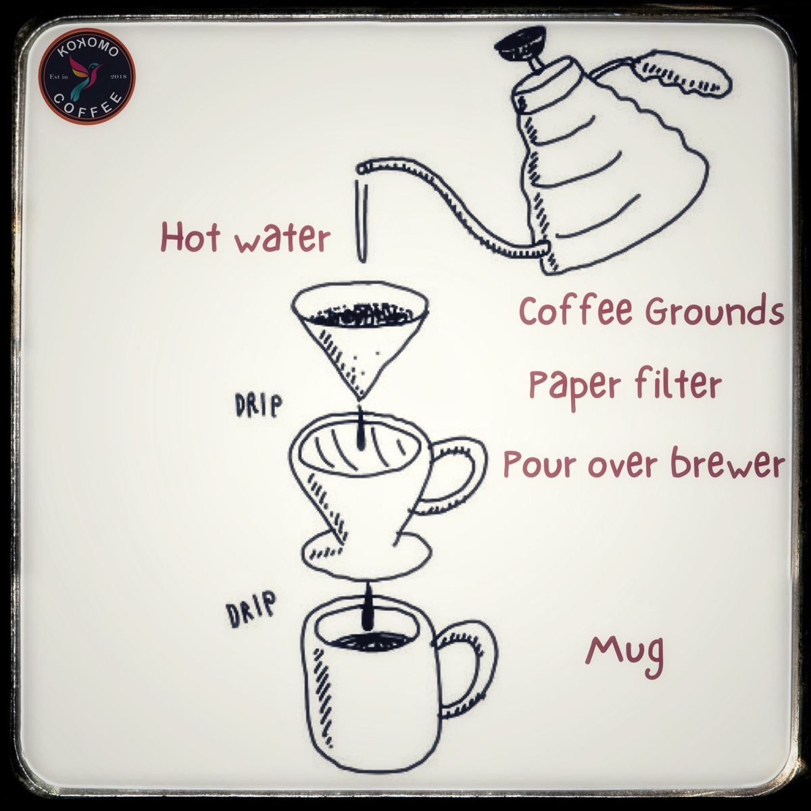
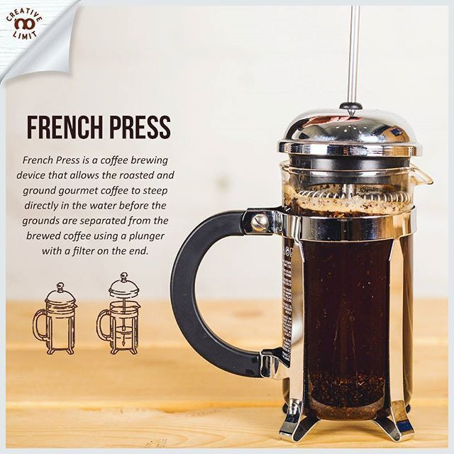

Pelajari dasar-dasar menyeduh kopi dan kenali karakter kopi favorit Anda.
Halaman ini membantu Anda memahami teknik seduh kopi sederhana di rumah, sehingga Anda bisa menikmati rasa kopi yang lebih maksimal.

Teknik V60 cocok untuk Anda yang ingin menikmati kopi dengan rasa lebih bersih, aroma lebih jelas, dan karakter buah atau floral yang lebih terasa.

French Press merupakan cara yang mudah dan praktis untuk menghasilkan kopi dengan body yang tebal, rasa kuat, dan tekstur yang lebih penuh.
Sebelum menyeduh kopi, penting untuk mengenal karakter biji kopi dan tingkat gilingan agar rasa yang dihasilkan sesuai dengan selera Anda.
Cocok untuk Anda yang menyukai rasa lebih halus, aroma kompleks, dan tingkat keasaman yang lebih terasa.
Cocok untuk Anda yang menyukai rasa lebih kuat, pahit, dan body yang tebal, dengan kandungan kafein yang lebih tinggi.
Perpaduan dua karakter kopi untuk menghadirkan rasa yang seimbang antara aroma, kekuatan, dan tekstur.
Setiap metode seduh membutuhkan ukuran gilingan yang berbeda agar ekstraksi rasa berjalan optimal.
Cocok untuk espresso karena air melewati bubuk kopi dengan cepat, sehingga membutuhkan gilingan yang lebih rapat.
Cocok untuk V60 dan drip coffee karena mampu menyeimbangkan rasa, aroma, dan waktu ekstraksi.
Cocok untuk French Press karena waktu kontak air dan kopi lebih lama, sehingga tidak mudah over-extracted.
Setelah mengenal teknik seduh dan karakter kopi, sekarang saatnya memilih menu terbaik dari Kedai Kopi Nusantara.